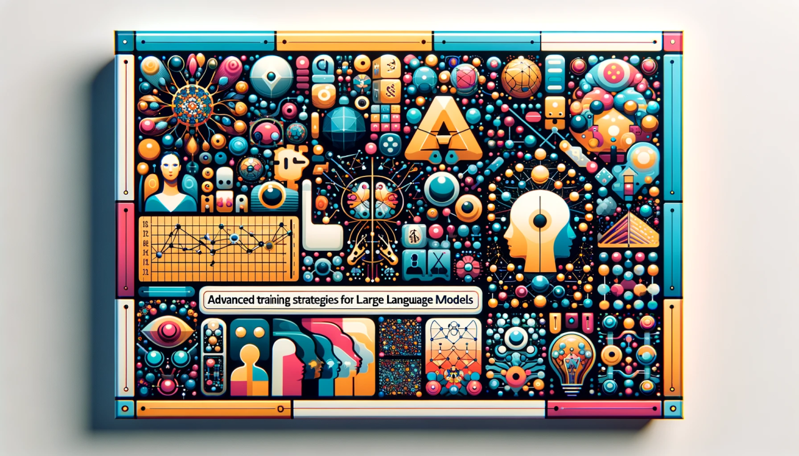

Q-Learning#
{kind=link}
Advanced Training Strategies for Large Language Models: A Q-Learning Approach
Introduction to Large Language Models#
LLMs represent a significant leap in AI’s ability to interact with human language, opening up new possibilities across various sectors. However, their deployment must be managed carefully to address ethical, societal, and technical challenges.
Definition and Overview#
Large Language Models (LLMs): LLMs are advanced AI systems designed to understand, generate, and interact with human language. They are built using deep learning techniques, particularly neural networks, and are trained on vast amounts of text data.
Characteristics: LLMs can perform a wide range of language-related tasks, including translation, summarization, question answering, and creative writing. Their ‘large’ aspect comes from the substantial size of their training datasets and the complexity of their neural network architectures.
Evolution#
Historical Development: The development of LLMs can be traced back to earlier forms of natural language processing (NLP) models. The evolution saw a shift from rule-based and statistical approaches to machine learning-based methods.
Breakthroughs: Significant milestones include the introduction of transformer models like Google’s BERT and OpenAI’s GPT series. These models revolutionized the field with their ability to understand context and generate coherent and contextually relevant text.
Architectural Insights#
Neural Networks: LLMs primarily use a variant of neural networks called transformers. These are designed to process sequences of data (like text) and are particularly effective at handling long-range dependencies in language.
Training Process: Training an LLM involves feeding it large volumes of text so that it learns language patterns, grammar, context, and nuances. The process requires significant computational resources and time.
Capabilities and Applications#
Language Understanding and Generation: LLMs excel at understanding the context and generating text that is contextually and grammatically coherent.
Versatility: They are used in various applications like chatbots, writing assistants, content creation tools, and more.
Customization and Fine-tuning: LLMs can be fine-tuned for specific tasks or industries, enhancing their applicability in specialized domains.
Ethical and Technical Challenges#
Bias and Fairness: Given that they are trained on human-generated text, LLMs can inherit and amplify biases present in the training data.
Misinformation and Content Generation: The ability of LLMs to generate realistic text also poses challenges in terms of misinformation and the potential for misuse.
Computational Requirements: Training and running LLMs demand substantial computational power, making them resource-intensive.
Q-Learning in AI#
Q-learning represents a fundamental approach in reinforcement learning, offering a robust framework for decision-making in AI. Its effectiveness and adaptability have made it a staple in the AI toolkit, although it requires careful tuning and consideration of its limitations.
Fundamentals of Q-Learning#
Definition: Q-learning is a type of reinforcement learning (RL) algorithm used in AI to find the best action to take in a given state.
Mechanism: It operates by learning a Q-value for each action in each state, which estimates the total reward that can be obtained from that state onward by taking that action.
Q-Table: A key component of Q-learning is the Q-table, which stores Q-values for each state-action pair.
How Q-Learning Works#
Learning Process: The algorithm updates the Q-values based on the rewards received, using the Bellman equation. This process continues until the values converge, indicating that the model has learned the optimal action for each state.
Exploration vs. Exploitation: Q-learning balances between exploring new actions (to discover better rewards) and exploiting known actions that give high rewards.
Application in AI#
Versatility: Q-learning is used in various domains like robotics, game playing, and autonomous vehicles, where decisions need to be made sequentially.
Adaptability: It is particularly useful in environments with clear reward structures but can also adapt to more complex and subtle reward systems.
Challenges and Limitations#
State Space Size: Q-learning can become impractical in environments with very large state spaces because of the Q-table’s size.
Convergence Time: The time it takes for the Q-values to converge can be long, especially in complex environments.
Reward Dependency: The efficiency of Q-learning heavily depends on how well the reward system is designed.
Advancements and Variants#
Deep Q-Networks (DQN): Integrating Q-learning with deep neural networks to handle large or continuous state spaces.
Variants: Modifications like Double Q-learning and Dueling Q-networks have been developed to address specific challenges and improve performance.
AlphaGo: A Case Study in AI Mastery#
AlphaGo’s success marked a milestone in AI, showing the potential of combining neural networks with advanced search techniques. It paved the way for further research in AI, inspiring new approaches and applications in various domains.
Overview of AlphaGo#
Introduction: AlphaGo is a computer program developed by DeepMind that marked a significant achievement in AI by defeating a world champion Go player.
Significance: Go is a complex board game with more possible positions than atoms in the universe, making it a formidable challenge for AI.
Key Components of AlphaGo#
Policy Neural Network (Policy NN)
Function: Selects the next move during the Go game.
Training: Initially trained on expert human games, then improved through self-play.
Role: Narrows down the search space to feasible and promising moves.
Value Neural Network (Value NN)
Purpose: Evaluates Go board positions and predicts the game’s winner.
Training: Refined through self-play, learning to assess complex game positions.
Monte Carlo Tree Search (MCTS)
Mechanism: Simulates game sequences, guided by Policy NN.
Strategy: Balances exploration of new moves and exploitation of known good moves.
Function: Selects the best move by aggregating results of many simulated games.
Groundtruth Signal
Nature: Simple binary win/loss outcome in Go.
Role: Provides a clear feedback mechanism for training.
Training and Self-Play#
Bootstrapping: AlphaGo improved through playing against itself, allowing both Policy NN and Value NN to evolve.
Iterative Learning: Continuous self-play led to an escalating level of play, with each version stronger than the last.
Technical Breakthroughs#
Handling Complexity: Demonstrated how AI could handle a high level of complexity and uncertainty.
Integration of Techniques: Combined deep learning with Monte Carlo tree search effectively.
Challenges and Achievements#
Historic Matches: Defeated world champion Lee Sedol in a 4-1 victory, demonstrating super-human performance.
Limitations: Despite its success, AlphaGo is specialized for Go and not directly applicable to broader AI challenges.
Adapting AlphaGo’s Strategies to Large Language Models (LLMs)#
Integrating AlphaGo’s strategies into LLMs holds significant potential for advancing the field of natural language processing, offering a pathway to more intelligent, adaptive, and capable language models.
Integrating AlphaGo’s Principles in LLMs#
Context: AlphaGo’s strategies revolutionized board game AI. Adapting these principles to LLMs involves leveraging the underlying concepts of learning and search to enhance language processing capabilities.
Policy Neural Network Adaptation#
Role in LLMs: The Policy NN equivalent in LLMs selects the most appropriate language constructs, akin to choosing moves in Go.
Training and Adaptation: It involves training on diverse language data and fine-tuning through tasks like question answering or text generation.
Value Neural Network in LLM Context#
Purpose: Evaluates the ‘value’ or appropriateness of generated text or intermediate steps in problem-solving.
Enhancement: Incorporating feedback from diverse language tasks to refine the model’s understanding and generation capabilities.
Advanced Search Techniques#
Search in LLMs: Adapting the MCTS concept, LLMs can use advanced search algorithms to explore various language paths, enhancing creativity and problem-solving abilities.
Application: Useful in tasks like constructing complex narratives or solving intricate problems where multiple reasoning paths can be explored.
Groundtruth Signal for LLMs#
Nature: Unlike the binary win/loss in Go, LLMs deal with more nuanced and subjective feedback in language tasks.
Implementation: Involves using a combination of human feedback, automated evaluation metrics, and benchmarks for training and refining models.
Iterative Learning and Self-Improvement#
Self-Play Equivalent: In LLMs, this involves continuous self-evaluation and refinement on a variety of language tasks.
Feedback Loop: The iterative process where the model learns from its outputs and the received evaluations, akin to AlphaGo’s self-play improvements.
Challenges in Adaptation#
Complexity of Language: Unlike Go’s structured play, language is more nuanced and subjective, posing challenges in evaluation and improvement.
Ethical Considerations: Ensuring the model’s outputs align with ethical guidelines and do not perpetuate biases.
Graph of Thoughts and Chain of Thought in Large Language Models (LLMs)#
CoT, ToT, and GoT represent significant steps forward in making LLMs more capable and understandable in their problem-solving approaches.
Chain of Thought (CoT)#
Introduction: Chain of Thought is a concept in LLMs that involves explicitly generating intermediate reasoning steps while solving problems.
Functionality: CoT enhances the ability of LLMs to tackle complex tasks, such as mathematics or logic puzzles, by breaking down the solution process into understandable steps.
Benefits: Improves transparency in how LLMs arrive at conclusions and aids in error analysis.
Advancement to Tree of Thought (ToT)#
Evolution: ToT extends CoT by introducing branching paths in the reasoning process.
Mechanism: It allows LLMs to explore multiple reasoning pathways and backtrack if a certain path proves unfruitful, mimicking human problem-solving strategies.
Graph of Thoughts (GoT)#
Concept: GoT further expands on CoT and ToT by representing the reasoning process as a complex graph.
Structure: In GoT, each node represents a reasoning step, and edges denote dependencies or relationships between these steps.
Capabilities: This structure enables the merging of different reasoning pathways, allowing for more sophisticated problem-solving techniques.
Integration with LLMs#
Application: Implementing GoT in LLMs involves training models to generate and navigate these complex reasoning graphs.
Challenges: Requires sophisticated training and fine-tuning to effectively leverage this approach in various language tasks.
Potential and Implications#
Enhanced Problem Solving: GoT can potentially elevate LLMs’ ability to handle more complex and nuanced tasks.
Transparency and Interpretability: These advanced reasoning frameworks can make LLM outputs more interpretable and transparent.
Process-Supervised Reward Models (PRMs) in Large Language Models#
PRMs represent a significant advancement in LLM training, offering a pathway to more intelligent, accurate, and transparent language models capable of complex problem-solving.
Overview of PRMs#
Definition: Process-Supervised Reward Models (PRMs) are a reinforcement learning technique used in training LLMs, focusing on providing feedback for each intermediate step in a task.
Contrast with ORMs: Unlike Outcome-supervised Reward Models (ORMs) that assess the final output, PRMs evaluate the correctness and logic of each step leading to the outcome.
Functioning of PRMs#
Detailed Feedback: PRMs provide step-by-step feedback, allowing models to understand precisely where errors occur in the reasoning process.
Training Efficiency: This granularity improves the training efficiency as models learn not just what is wrong, but why it’s wrong.
Implementation in LLMs#
Application: PRMs are particularly useful in complex tasks involving multi-step reasoning, such as mathematical problem solving or logical reasoning.
Integration: They require careful integration into the training pipeline to ensure that feedback is accurate and constructive.
Advantages of PRMs#
Improved Learning: By pinpointing errors, PRMs facilitate quicker and more effective learning.
Greater Transparency: They enhance the transparency of how LLMs reach conclusions, making them more interpretable.
Challenges and Considerations#
Complexity in Design: Designing effective PRMs can be challenging as it requires a nuanced understanding of the task at hand.
Balancing Feedback: Ensuring that feedback is neither too sparse nor overwhelmingly detailed is crucial for optimal learning.
Integrating Q-Learning with Large Language Model (LLM) Training#
Integrating Q-Learning into LLM training represents a significant step towards creating more sophisticated, adaptable, and intelligent language models.
Conceptual Foundation#
Q-Learning for LLMs: Adapting Q-learning for LLMs to enhance reasoning and decision-making, similar to AlphaGo’s approach in Go.
Integration: Merging reinforcement learning principles with advanced language understanding, akin to combining AlphaGo’s Policy and Value NNs with LLMs’ capabilities.
Mechanism and Adaptation#
Policy and Value Networks: Adaptation of AlphaGo’s Policy NN for selecting optimal language patterns and Value NN for evaluating reasoning steps in LLMs.
Search Strategies: Incorporating AlphaGo’s Monte Carlo Tree Search (MCTS) principle, adapted to explore complex language and reasoning spaces in LLMs.
Training and Improvement Loop#
Iterative Enhancement: Leveraging the self-improvement loop of AlphaGo, where LLMs iteratively refine language generation and reasoning through continuous feedback.
Feedback Mechanism: Detailed feedback from each step, mirroring AlphaGo’s integration of game outcomes and MCTS results to guide learning.
Challenges and Solutions#
Complex Decision Space in Language: Addressing the nuanced decision-making in LLMs, inspired by AlphaGo’s handling of Go’s complexity.
Effective Reward Shaping: Designing rewards that reflect language output quality, drawing parallels to AlphaGo’s groundtruth signal based on game outcomes.
Applications and Implications#
Enhanced Language Models: Aim to create LLMs with superior reasoning, analogous to AlphaGo’s mastery in Go.
Broader Applicability: Adapting AlphaGo’s strategies to enable LLMs to tackle diverse, complex tasks, including creative and analytical challenges.
Challenges and Future Prospects in Advanced LLM Training#
While there are significant challenges in advancing LLM training, the field also presents vast opportunities for growth and improvement. The future of LLMs lies in balancing these challenges with innovative solutions to unlock their full potential.
Current Challenges#
Computational Resources: Advanced LLM training, especially with techniques like Q-Learning, requires immense computational power, making it resource-intensive.
Data Quality and Bias: Ensuring the training data is diverse and unbiased remains a challenge, as LLMs can perpetuate existing biases in the data.
Ethical Considerations: The potential misuse of advanced LLMs in generating misinformation or harmful content is a significant concern.
Model Interpretability: As LLMs become more complex, ensuring their outputs are interpretable and explainable becomes increasingly challenging.
Future Prospects#
Energy-Efficient Models: Research into more efficient models and training methods to reduce computational demands.
Addressing Biases: Continued efforts in developing techniques to identify and mitigate biases within LLMs.
Robust Ethical Frameworks: Establishing stronger ethical guidelines and frameworks for the use and development of LLMs.
Enhanced Interpretability: Innovations in making LLMs more transparent and understandable in their decision-making processes.
Conclusion#
In summary, the development and refinement of Large Language Models (LLMs) through advanced training strategies, such as the incorporation of Q-Learning, signify a major leap in AI capabilities. These models, inspired by the mechanisms of AlphaGo and enhanced with sophisticated techniques like Process-Supervised Reward Models and Graph of Thoughts, are poised to revolutionize how AI understands and interacts with human language. However, this journey is not without its challenges, including ethical considerations, computational demands, and the need for bias mitigation. Looking forward, the potential of LLMs is vast, offering transformative possibilities in numerous domains, provided these challenges are thoughtfully addressed.
References and Further Reading#
Silver, D., et al. (2016). “Mastering the game of Go with deep neural networks and tree search.” Nature, 529(7587), 484-489.
Brown, T. B., et al. (2020). “Language Models are Few-Shot Learners.” arXiv preprint arXiv:2005.14165.
Sutton, R. S., & Barto, A. G. (2018). “Reinforcement Learning: An Introduction.” MIT press.
Vaswani, A., et al. (2017). “Attention is All You Need.” In Advances in Neural Information Processing Systems.
Bengio, Y., Lecun, Y., & Hinton, G. (2021). “Deep Learning for AI.” Communications of the ACM, 64(7), 58-65.
DeepMind. AlphaGo. [Online]. Available: https://deepmind.com/research/case-studies/alphago-the-story-so-far
OpenAI. (2023). “ChatGPT: Optimizing Language Models for Dialogue.” [Online]. Available: https://openai.com/blog/chatgpt
Wei, J., et al. (2022). “Chain of Thought Prompting Elicits Reasoning in Large Language Models.” arXiv preprint arXiv:2201.11903.
Wu, E., et al. (2023). “Let’s Verify Step by Step.” arXiv preprint arXiv:2305.20050. [Online]. Available: https://arxiv.org/abs/2305.20050
Besta, M., et al. (2023). “Graph of Thoughts: Solving Elaborate Problems with Large Language Models.” arXiv preprint arXiv:2308.09687. [Online]. Available: https://arxiv.org/abs/2308.09687